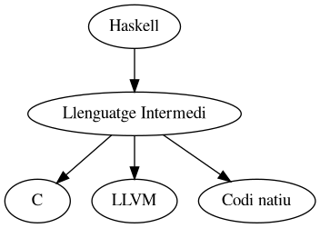
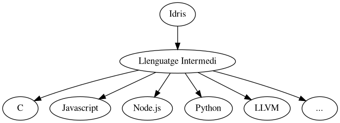

Created: 2021-06-01 Tue 14:07
isPalindrome: String -> Bool isPalindrome str = str == reverse str
Basats en Càlcul Lambda en comptes de les màquines de Turing
<real number> ::= <sign><natural number> |
<sign><natural number>'.'<digit sequence> |
<sign>'.'<digit><digit sequence> |
<sign><real number>'e'<natural number>
Formen
Visions diferents sobre l’objectiu de la compilació:

Neix de C–
